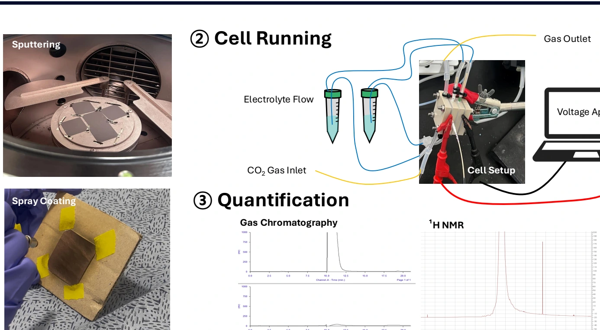

My CO₂ reduction research asked how the ionomer surrounding a Cu catalyst affects product selectivity—and how that interface changes during extended operation.
As part of a DGIST undergraduate group research project, our team varied Cu thickness and Nafion loading in a gas-diffusion-electrode system. We combined electrochemical measurements with gas chromatography and ¹H NMR to examine performance, then investigated longer-term changes with coumarin-based probing and XPS.
Loading changes the response
Among the conditions compared in the 2025 poster, 300 nm Cu and a Nafion loading of 86.25 μg cm⁻² gave favorable C₂+ selectivity. Excess loading increased the measured charge-transfer resistance. These are observations within the tested system, not universal optimum values.
| Nafion loading / μg cm⁻² | Resistance / Ω |
|---|---|
| 28.75 | 8.209 |
| 86.25 | 7.614 |
| 258.75 | 13.417 |
What changed during extended operation?
The final UGRP report describes declining gas-phase C₂+ Faradaic efficiency and increasing H₂ production. Select an experiment to compare its reported initial and final values.
Source: 2025 UGRP final report, section 4(4). Gas products were quantified by GC; liquid products were not quantified in these extended runs. Only reported endpoints are shown, on a common 0–50% FE scale.The question I carry forward
How do local solvation, ion transport, and polymer–catalyst interactions jointly control electrochemical selectivity and stability? I am interested in using computation together with experimental evidence to investigate these interfacial processes.
View research poster